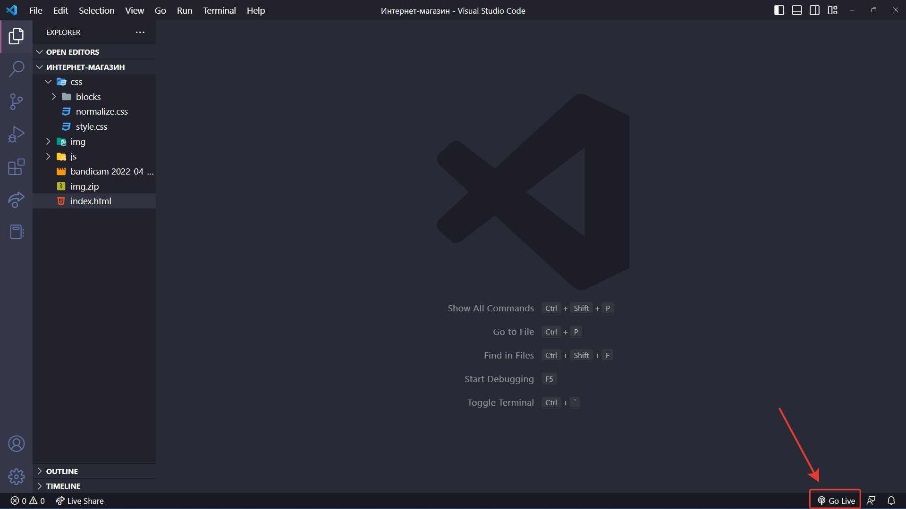
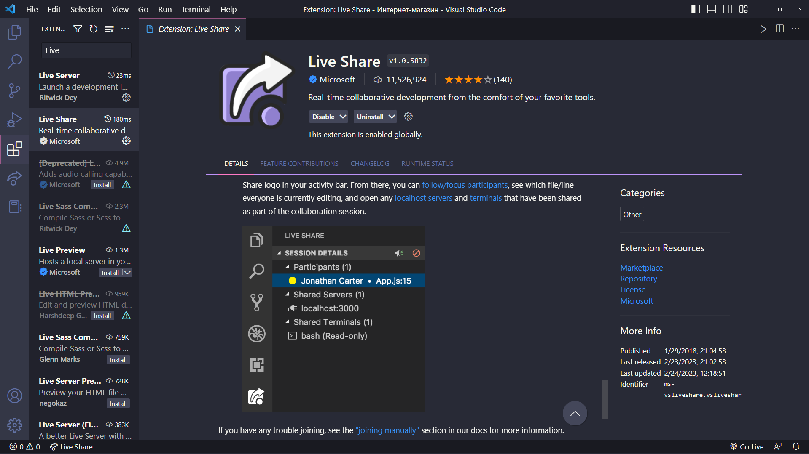
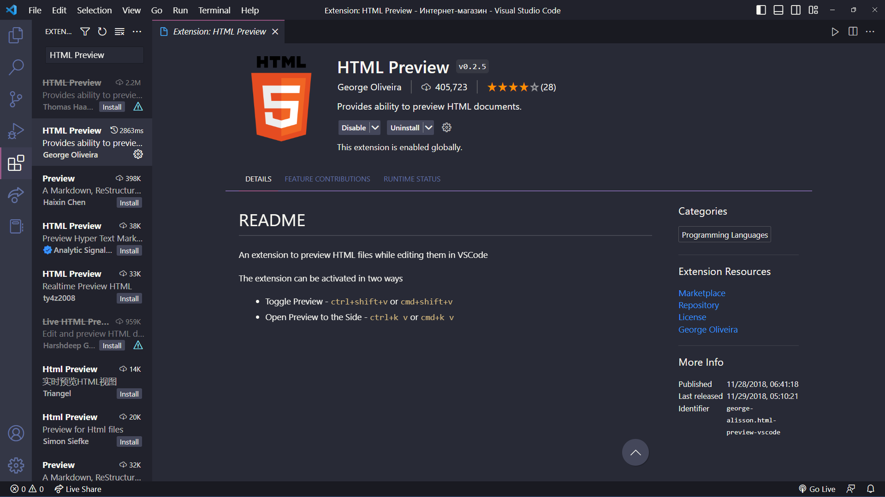
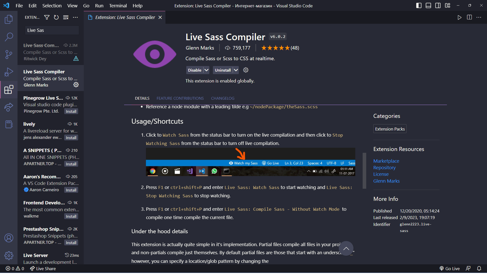
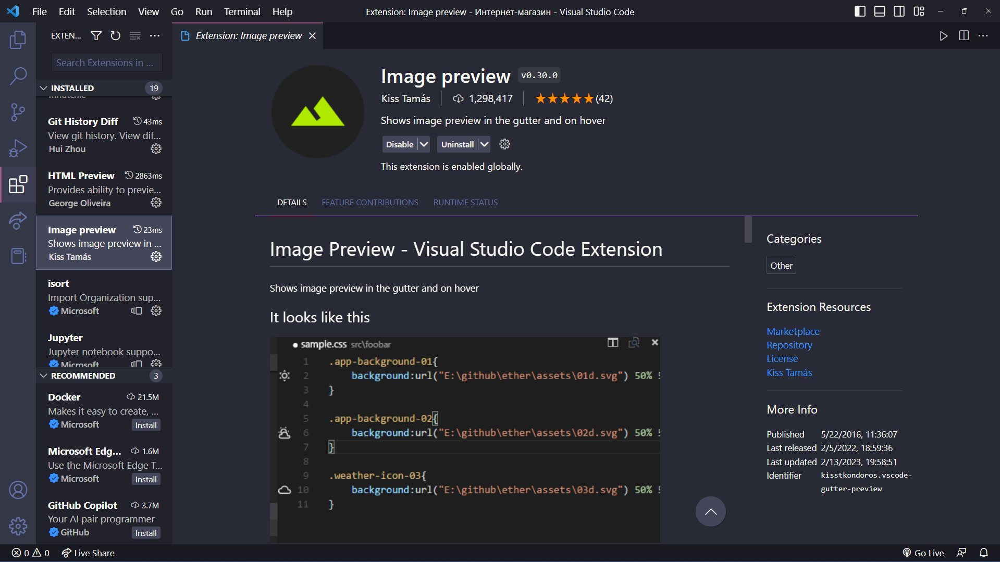
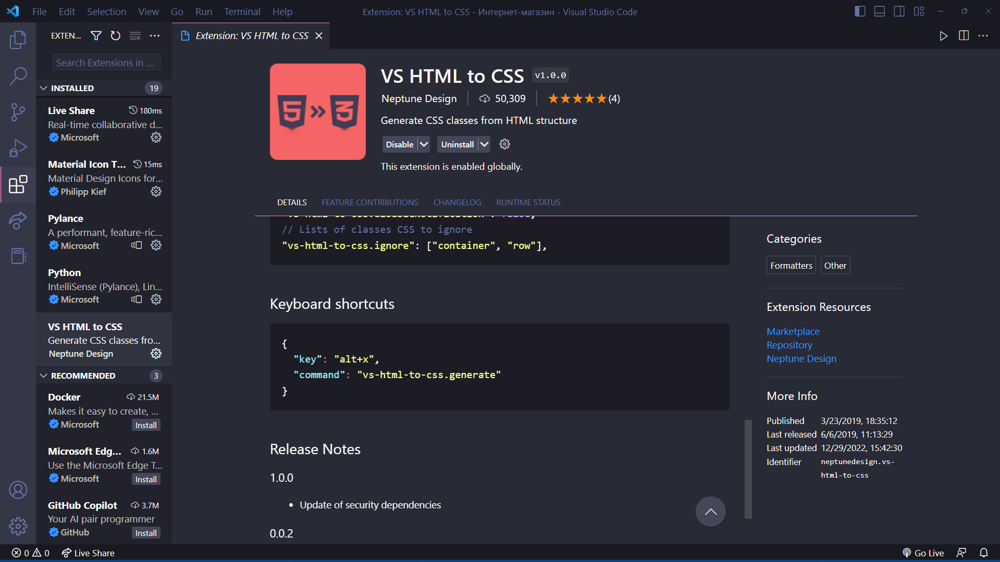

Плагины позволяют ускорить процесс разработки, визуально улучшить восприятие кода, и добавить в текстовый редактор (в данном случае VS Code) дополнительные функции, то есть расширить базовый функционал
Emmet
Помогает ускорить вёрстку. Много разных фишек, с которыми можно разобраться и ускорить процесс работы. Поддержка emmet встроена прямо в редактор, устанавливать его отдельно не нужно.
Благодаря использованию сокращений и специальных конструкций можно создавать структуру сайта в одну строчку.
Существует множество справочников с сокращениями Emmet. Вот некоторые из них:
Справочник №1 Справочник №2 Справочник №3Live Server
Чтобы сразу увидеть результат работы нужно только нажать на кнопку и в браузере отобразится страница, которая автоматически будет перезагружаться.
Это очень удобно, так как любые изменения будут отображаться без обновления страницы. Не забывайте отключать плагин с помощью «Stop Live Server»
Live Share
Для больших распределенных команд разработчиков очень важно правильно организовать совместную работу с кодом в реальном времени. Расширение Microsoft Visual Studio Live Share связывает ваш Visual Studio Code с редакторами ваших коллег. Таким образом в режиме реального времени каждый сотрудник может видеть, над чем работают другие члены команды. Live Share разделяет не только экраны, но и вывод запущенного кода.
К соединению можно подключить также терминалы или локальные веб-приложения.
HTML Preview
Иногда для комфортной работы требуются очень простые вещи. Например, плагин HTML Preview, который умеет показывать, как будет выглядеть HTML, который вы пишете.
Live Sass Compiler
Важно понимать, что браузеры не понимают Sass-код напрямую. Как и в целом препроцессоры. Sass компилируется в чистый CSS-код. Как все Sass-стили сводят в один общий index.sass, который потом компилируется index.css. За счет этого повышается скорость загрузки страницы, ведь браузеру намного легче подключить стили одним файлом, чем считывать их по отдельности. Один из способов компилировать Sass-код это установить данное расширение.
Image preview
Позволяет быстро работать с изображениями в коде. Давайте я подключу картинку, после мы видим на полях появилась ее маленькая иконка. Когда длинный html-код, много картинок, мы можем ориентироваться, видеть что где у нас подключено. При наведении на путь картинки у нас появляется информационное окно, где мы можем открыть файл картинку, видим что это за картинка, а также некоторая информация о картинке.
VS HTML to CSS
Позволяет генерировать классы в css на основе названий классов из HTML
Сторонние сайты
Конвертер изображений
Очень часто при разработке сайтов встречается ситуация, что необходим какой-то конкретный формат
изображения. Изменить формат файла можно разными способами, но самый удобный, по нашему мнению, это
использование онлайн-конвертеров.
Online-convert

Удаление фона
Также нередко возникает необходимость удалить фон с фотографии, для этого тоже рекомендуется использовать
сторонние сайты.
Единственным недостатком таких сайтов является некорректность обработки некоторых изображений. Поэтому
онлайн-инструменты данной категории рекомендуется применять в простых случаях.
Некоторые из сайтов:
PhotoRoom
Erase
Проверка по стандартам
Валидатор W3C – проверка, валидный ли HTML.
Валидатор W3C – проверка, как браузеры прямо сейчас поддерживают разные свойства, теги, API
Сайты с иконками
Сайты, где можно брать иконки: Fontello FontAwesome Flaticon
Работа с иконками
Рассмотрим как использовать иконки на примере сайта Fontello.
Сервис Fontello действует довольно просто: вы отмечаете символы, которые вам нравятся, и нажимаете кнопку
«Download webfont».

Внутри скачанного архива содержится шрифт fontello в четырёх разных форматах: ttf, svg, eot и woff. Это гарантирует, что в любом браузере, даже устаревшем, какой-то из них будет обязательно работать. Нам требуется две вещи: папка font целиком, она, напомню, хранит четыре шрифтовых файла в разном формате, и коды символов. Их можно посмотреть в файле fontello.css или на сайте во вкладке «Customize Codes».

На вкладке Customize Names указаны названия символов для их использования

Подключение и вывод на страницу иконок
Теперь можно подключить файл fontello.css к сайту в заголовке <head>:
<head>
...
<link href="css/fontello.css" rel="stylesheet" type="text/css">
...
</head>
Либо добавить стили в основной файл стилей, обычно это style.css из fontello.css:
@font-face {
font-family: 'fontello';
src: url('../font/fontello.eot?5040357');
src: url('../font/fontello.eot?5040357#iefix') format('embedded-opentype'),
url('../font/fontello.woff2?5040357') format('woff2'),
url('../font/fontello.woff?5040357') format('woff'),
url('../font/fontello.ttf?5040357') format('truetype'),
url('../font/fontello.svg?5040357#fontello') format('svg');
font-weight: normal;
font-style: normal;
}
Использование
Вывод иконки происходит путём добавления класса с её именем.
Например:
<div class="letter">
<i class="icon-phone"></i>
</div>
В целом Fontello очень хороший сервис и его стоит использовать, поскольку он позволяет загружать только выбранные иконки, что существенно экономит время загрузки конечной страницы.